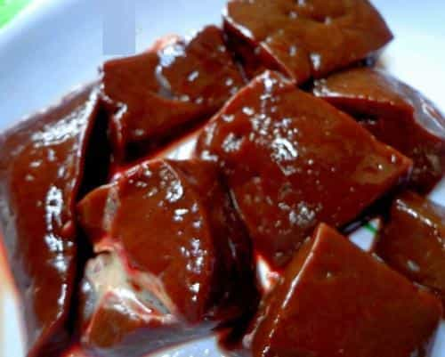
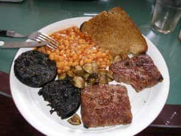
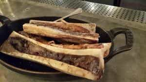
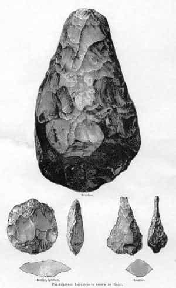
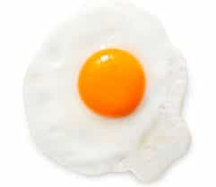
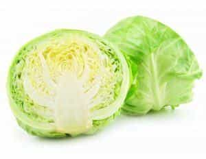

< < < Back
5 Foods That Really Are “Super” – Return Of Kings
Two weeks ago, I wrote an article in which I analyzed the so-called “superfoods” that are hocked by all the magazines. The conclusion I drew through my research was that, while none of those foods are truly harmful, and in many cases perfectly palatable, they are not any more healthy than comparable foods, and in some cases can cause harm in a non-dietary context.
Looking at the comments of that article as I usually do, I saw that several people were interested in a counterpoint article to that previous article, discussing foods that can actually be deemed “super”. So, using my two *ahem* superpowers of “Google searches” and “an external hard drive full of biology and anthropology notes from college”, I decided to write that article.
So here are five foods that can be truly considered “super”. And best of all, these are very easily accessible, much more so than the “official” superfoods. In many cases, these things are likely already on your shopping list, they just require you to overcome a lingering sense of childish “ickiness” and use your available resources to their fullest:
1. Organ Meats
Historically the offal meats have been some of the cheapest cuts of meat available due to them, admittedly, being kind of disgusting visually—at the very least compared to the more presentable cuts of meat from the muscles of the animal.
However, cooked properly, they are just as tasty as their more visually appealing counterparts, and at least just as nutritious as well. Depending on the organ you choose, offal may have a greater nutritional content than a typical cut of meat:
Liver, for example, is higher in Vitamins A and B and dietary Iron, than your average cut of meat. It also has high amounts of folic acid and trace elements like zinc. As a side note, eating the liver of predatory animals can lead to overdose of Vitamin A, a condition that can be fatal, but I doubt you were planning on eating the liver of dogs or bears.
Heart is entirely a lean muscle, and has a pound-for-pound higher protein content than muscle meat, as well as providing dietary collagen and elastin, which promotes skin health.
Kidneys have riboflavin, the B vitamins, and niacin, and the vitamin-packed goodness of organ meats goes on and on.

Overcome your childhood distaste for your mom’s liver and onions, and try some organ meats. On a similar note to offal…
2. Blood
Blood is even more aesthetically disgusting than offal, but even more nutrient dense. As blood cells use iron to bind to oxygen molecules, one can expect blood to be very high in iron—indeed, it is the most iron rich food you can buy, as well as having the typical nutrients of other meats such as protein and B-vitamins.
The problem is how does one prepare blood? I suppose you could drink it raw, but you’d likely rather make it into soup, blood sausage, or black pudding as various cultures around the world have done for thousands of years.

3. Marrow
Continuing the “meat by product” train of thought that I’ve been on so far, marrow is a highly nutritious food—indeed, it is sometimes described as one of the pound-for-pound most nutritious foods, period. I must clarify here, that “most nutritious” refers largely to calories and fat—marrow is very calorically dense and rich in dietary fats. Indeed, some anthropologists believe that early hominids would regularly crack the long bones of prey animals to get at their marrow, and the fatty acid content therein directly caused the development of brain and nervous system tissues in successive hominid generations.

Since the body does need fats, I would suggest making like your hirsute ancestors and getting it from marrow rather than the junkfood of modernity. However, you can purchase pre-cracked marrow bones from a butcher or supermarket—Acheulean hand-axes are no longer required to break long bones.

4. Egg yolks
Yes, the humble egg yolk is something I would consider a superfood. This is mainly because I know a surprising number of prissy types who refuse to eat the yolks and only eat the whites, because “oh egg yolks have cholesterol” or whatever.
Screw that noise.
The yolk is the part of the egg that literally evolved to serve as a food source for the chicken embryo, nourishing the chicken-to-be until it hatches. How nutrient packed do you think a yolk has to be to nourish a little bundle of dividing cells until it becomes a living thing?
Answer: pretty nutrient rich.
Yolks are rich in vitamins, proteins, fats, and minerals. In fact, they have all of the fat soluble vitamins, AND all of the essential fatty acids.
What else can I say but: eat your egg yolks

5. Cabbage
The only one on this list that isn’t some sort of animal product, the cabbage seems pretty mundane, and not very “super” at all. It seems to be your typical Brassica cultivar, not too different from broccoli or brussells sprouts.
Wrong.
Cabbage is rich in dietary fiber, vitamins C and K, and, due to containing certain phytochemicals that block estrogen production, cabbage can increase your testosterone levels as well. And, if you’re a man, that has so many benefits it’s easier just to link to them.

So, there you have it, five “superfoods” that you are likely already familiar with. Go forth and eat.
Read More: 5 Easy Ways To Boost Your Testosterone